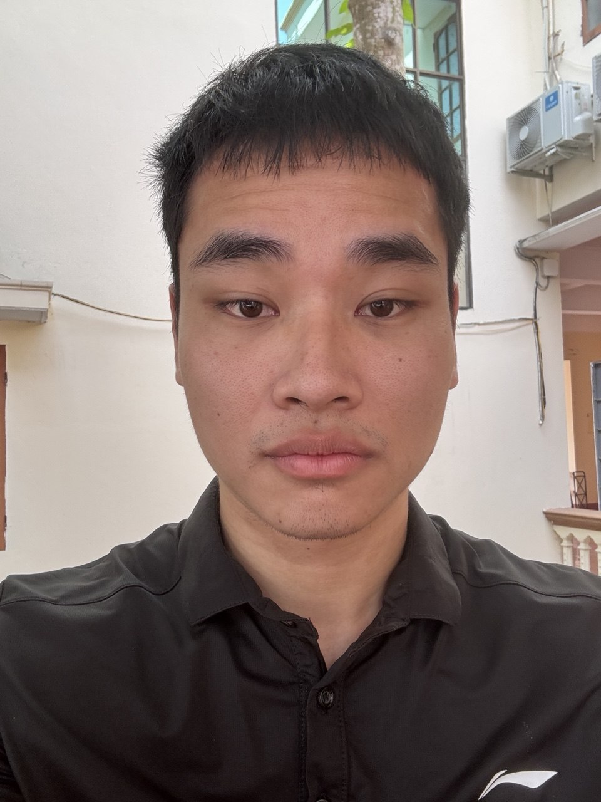
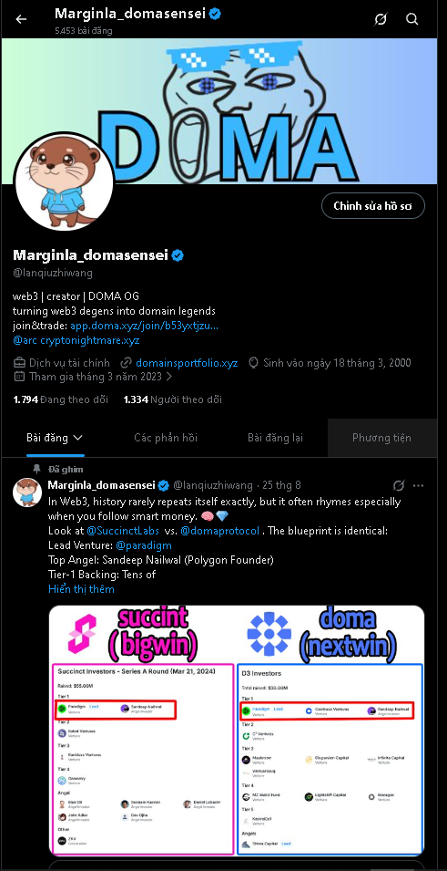
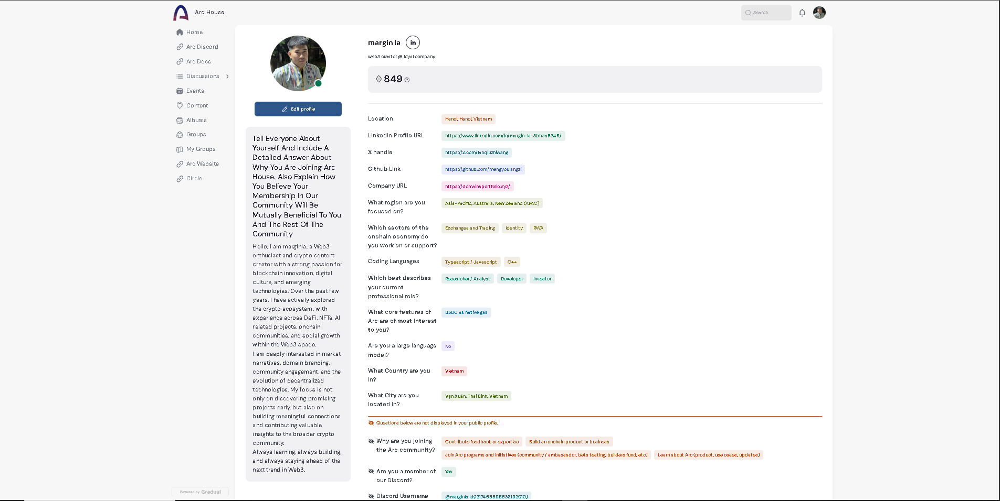
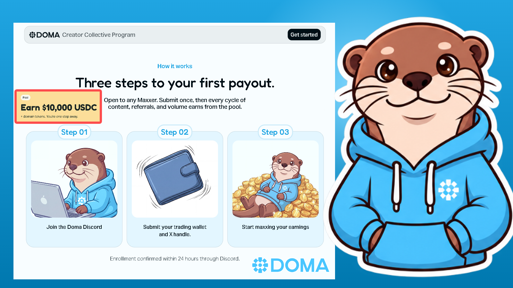
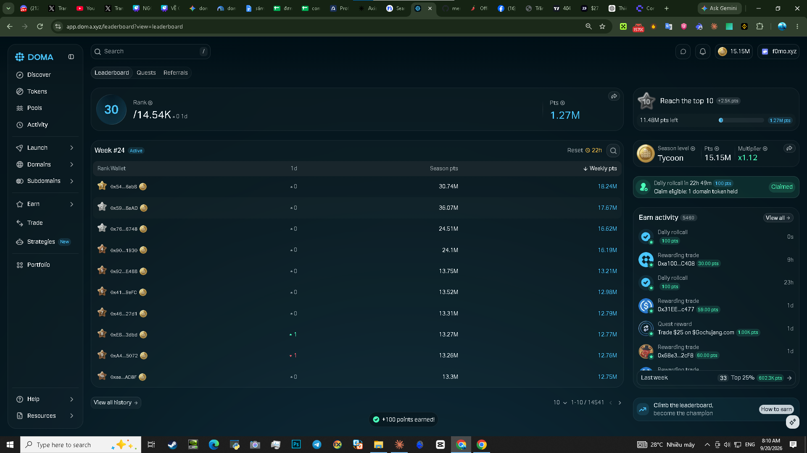
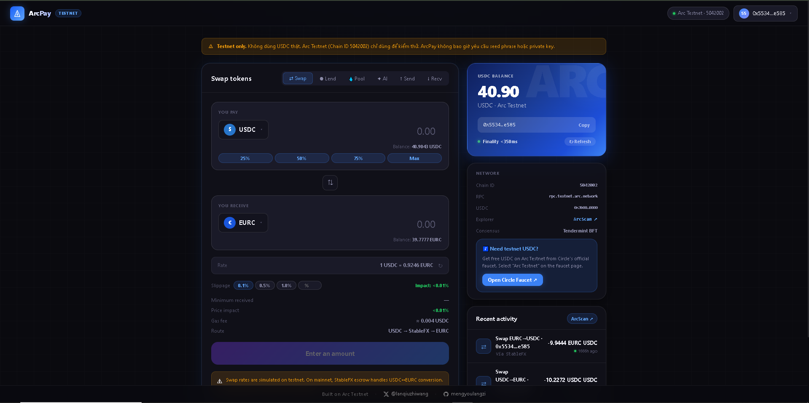

marginla
Web3 creator at Loyal Company, and an on-chain builder / RWA & domains investor working out of Hanoi, Vietnam.
Cheerful, easygoing, and gentle — freelancing in crypto trading and affiliate work, fluent in English, Vietnamese, and Chinese. Always up for meeting new people; single and open to it.
about
I'm Trần Đức Thịnh (marginla), a Web3 enthusiast and crypto content creator with a strong passion for blockchain innovation, digital culture, and emerging technologies. Over the past few years I've actively explored the crypto ecosystem, with hands-on experience across DeFi, NFTs, AI-related projects, on-chain communities, and social growth within Web3.
I'm especially drawn to market narratives, domain branding, community engagement, and the evolution of decentralized technologies. My focus isn't only on finding promising projects early — it's on building real connections and feeding useful insight back into the wider crypto community.
Always learning, always building, and always trying to stay ahead of the next trend in Web3.

focus & stack
selected work

A DeFi payment dApp built on Arc Testnet: wallet connection, USDC send/receive with QR codes, USDC↔EURC swap, lending & borrowing, liquidity pools, and an integrated AI agent tab — shipped as a single-file app end to end.

A Node.js sniper bot for newly launched domain tokens with slippage-protected execution, plus an MCP-connected research workflow for marketplace listings and purchase automation — built alongside a live fractional-domain portfolio.

A self-built, single-file dashboard for tracking on-chain positions and market context across the projects I follow — iterated over several versions as my own needs changed.
why arc house
I'm applying to Arc House because I've spent time building on Arc, not just watching it from the sidelines. For a hackathon I built ArcPay, a DeFi payment app on Arc Testnet with wallet connection, USDC send/receive, QR-code payments, USDC↔EURC swaps, lending, borrowing, and liquidity pools. That project is what made USDC as native gas click for me in a way reading about it never did — when the gas token and the settlement asset are the same thing, payments UX becomes a genuinely different design problem, and it's the single feature of Arc I'm most excited to keep building around.
The rest of my work sits right next to that. I invest in and build tooling around tokenized domains on Doma — a sniper bot for new domain-token launches and an MCP-based research workflow for the marketplace. Domains are one of the clearer on-chain identity and RWA primitives that already exist, and a chain built around real payments feels like a natural settlement layer for that kind of asset to eventually move through.
Joining Arc House is a chance to bring that identity/RWA angle into a room that's mostly thinking about trading and exchanges, and to pressure-test my own payments work against builders who are further along than I am.
USDC as native gas is the one Arc feature I'm most excited to keep building around. — from building ArcPay on Arc Testnet

mutual benefit
connect
Reachable across the usual places — happy to talk Arc, Doma, domains, or payments UX any time.